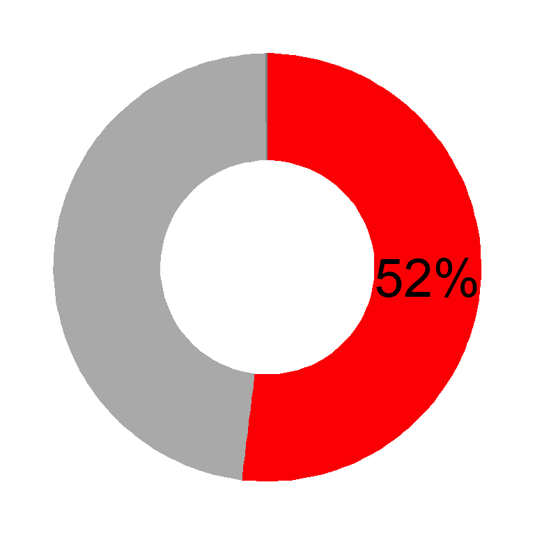

| Characteristic | Overall, N = 2,0021 | Gender | |
|---|---|---|---|
| Female, N = 1,0171 | Male, N = 9851 | ||
| Age | |||
| 15-19 | 1,089 (54%) | 541 (53%) | 548 (56%) |
| 20-24 | 913 (46%) | 476 (47%) | 437 (44%) |
| Location | |||
| Rural | 1,219 (61%) | 608 (60%) | 611 (62%) |
| Urban | 783 (39%) | 409 (40%) | 374 (38%) |
| Education Level | |||
| Incomplete primary | 155 (7.7%) | 80 (7.9%) | 75 (7.6%) |
| Complete primary | 965 (48%) | 461 (45%) | 504 (51%) |
| Complete secondary | 699 (35%) | 374 (37%) | 325 (33%) |
| Secondary and above | 183 (9.1%) | 102 (10%) | 81 (8.2%) |
| 1 n (%) | |||
1 Demographic Characteristics
1.1 Sample characteristics
Total sample size is 2,002 and includes a roughly equal number of female and male participants. The majority of participants are aged between 15-19 years. A larger proportion of participants reside in rural areas compared to urban areas. Most participants have completed primary education, with a significant number also having completed secondary education. Only a small proportion have an education level of secondary and above.
1.2 Relationship status
Majority of young people are either single or dating (93%).

1.3 Own children
Majority of the respondents do not have children of their own.

1.4 Biggest change in your life in the past 12 months
Overall, majority of the respondents experienced a negative change in the past 12 months.


1.5 Concerning issues
The bulk of youth are very concerned about unemployment and the economy.
| Estimated number | ||||
|---|---|---|---|---|
| Issue | Very concerned | Somewhat concerned | Barely concerned | Not at all concerned |
| Terrorism | 2,572,290 | 2,687,698 | 1,618,963 | 4,586,459 |
| Poverty | 5,993,201 | 2,312,526 | 1,174,203 | 1,996,543 |
| Violence/war | 3,397,833 | 2,602,839 | 1,673,948 | 3,791,120 |
| Unemployment | 7,375,760 | 1,750,543 | 954,951 | 1,402,304 |
| Climate change | 3,879,438 | 3,219,346 | 1,679,107 | 2,703,104 |
| Crime | 4,161,795 | 2,598,511 | 1,668,621 | 3,027,775 |
| Economy | 8,051,634 | 1,593,488 | 746,099 | 1,093,093 |
| Gender inequality | 2,756,772 | 2,298,949 | 2,400,730 | 3,983,944 |
| Migration | 1,161,584 | 1,702,002 | 2,208,179 | 6,305,119 |
| Percentage | ||||
|---|---|---|---|---|
| Issue | Very concerned | Somewhat concerned | Barely concerned | Not at all concerned |
| Terrorism | 22% | 23% | 14% | 40% |
| Poverty | 52% | 20% | 10% | 17% |
| Violence/war | 29% | 23% | 15% | 33% |
| Unemployment | 64% | 15% | 8% | 12% |
| Climate change | 34% | 28% | 15% | 23% |
| Crime | 36% | 23% | 14% | 26% |
| Economy | 70% | 14% | 6% | 9% |
| Gender inequality | 24% | 20% | 21% | 35% |
| Migration | 10% | 15% | 19% | 55% |
2 General Media Consumption
2.1 Consumption Frequency
Most youth watch broadcast TV, watch movies, listen to radio, use internet and visit social networking sites.
| Estimated number | |||||||
|---|---|---|---|---|---|---|---|
| Media Type | Several times a day | At least once a day | Several times a week | At least once a week | Several times a month | Less often | Never |
| Watch broadcast TV | 3,118,370 | 3,134,681 | 989,684 | 523,740 | 191,901 | 1,916,882 | 1,656,060 |
| Watch movies | 1,202,045 | 1,486,931 | 835,075 | 701,042 | 296,804 | 2,335,335 | 4,674,085 |
| Listen to the radio | 3,514,468 | 1,881,936 | 822,106 | 417,210 | 188,260 | 2,268,769 | 2,438,570 |
| Read local newspapers | 145,813 | 352,095 | 291,656 | 423,814 | 270,815 | 3,522,169 | 6,524,956 |
| Read local cartoon booklets | 114,334 | 242,754 | 345,099 | 446,044 | 573,055 | 4,414,807 | 5,395,226 |
| Use the internet (excluding social networking sites) | 3,282,519 | 1,633,840 | 829,814 | 546,036 | 199,586 | 1,278,313 | 3,761,211 |
| Visit social networking sites | 4,838,443 | 1,359,802 | 660,542 | 323,712 | 153,998 | 724,370 | 3,470,452 |
| Percentage | |||||||
|---|---|---|---|---|---|---|---|
| Media Type | Several times a day | At least once a day | Several times a week | At least once a week | Several times a month | Less often | Never |
| Watch broadcast TV | 27% | 27% | 9% | 5% | 2% | 17% | 14% |
| Watch movies | 10% | 13% | 7% | 6% | 3% | 20% | 41% |
| Listen to the radio | 30% | 16% | 7% | 4% | 2% | 20% | 21% |
| Read local newspapers | 1% | 3% | 3% | 4% | 2% | 31% | 57% |
| Read local cartoon booklets | 1% | 2% | 3% | 4% | 5% | 38% | 47% |
| Use the internet (excluding social networking sites) | 28% | 14% | 7% | 5% | 2% | 11% | 33% |
| Visit social networking sites | 42% | 12% | 6% | 3% | 1% | 6% | 30% |
2.2 Mobile phone ownership
71% of the youth own a mobile phone. Of those that own a mobile phone, 80% have at least one smartphone.

- Basic phone – only allows calling, messaging, saving numbers
- Feature phone – has camera, radio, basic internet
- Smartphone – has a touch screen, mobile applications, e.g., WhatsApp, Instagram, TikTok
| Ownership | Percentage | Number |
|---|---|---|
| Basic phone | ||
| No | 80% | 6,508,660 |
| Yes | 20% | 1,633,379 |
| Feature phone | ||
| No | 92% | 7,460,568 |
| Yes | 8% | 681,472 |
| Smartphone | ||
| No | 20% | 1,641,347 |
| Yes | 80% | 6,500,693 |
2.3 Times Youth Go Online
Over 55% of youth go online between 6pm and 10pm
| Estimated number | ||
|---|---|---|
| Time | No | Yes |
| 2am-6am | 10,888,793 | 642,525 |
| 6am-10am | 8,653,133 | 2,878,185 |
| 10am-2pm | 9,055,567 | 2,475,751 |
| 2pm-6pm | 8,279,132 | 3,252,186 |
| 6pm-10pm | 5,245,403 | 6,285,915 |
| 10pm-2am | 7,830,742 | 3,700,576 |
| Percentage | ||
|---|---|---|
| Time | No | Yes |
| 2am-6am | 94% | 6% |
| 6am-10am | 75% | 25% |
| 10am-2pm | 79% | 21% |
| 2pm-6pm | 72% | 28% |
| 6pm-10pm | 45% | 55% |
| 10pm-2am | 68% | 32% |
2.4 Favourite Activities
The most common first choice activities youth do online include looking for entertainment, check what is new with friends, and posting personal pictures.

2.5 Platform visit frequency
Majority of youth visit WhatsApp, Facebook, Instagram and Tiktok at least once a day.
| Estimated number | |||||||
|---|---|---|---|---|---|---|---|
| Platform | Several times a day | At least once a day | Several times a week | At least once a week | Several times a month | Less often | Never |
| 3,156,945 | 1,638,794 | 559,081 | 256,803 | 81,428 | 242,631 | 0 | |
| X | 382,938 | 214,570 | 114,035 | 73,962 | 11,378 | 43,582 | 0 |
| 1,228,648 | 680,807 | 308,231 | 190,472 | 43,558 | 125,234 | 0 | |
| YouTube | 448,882 | 250,414 | 216,933 | 149,696 | 30,046 | 86,995 | 0 |
| TikTok | 2,265,039 | 664,945 | 305,941 | 148,062 | 43,499 | 92,053 | 6,277 |
| 4,318,713 | 1,106,889 | 339,351 | 127,114 | 13,489 | 130,851 | 0 | |
| WhatsApp Business | 251,615 | 29,763 | 6,739 | 13,094 | 0 | 0 | 0 |
| Percentage | |||||||
|---|---|---|---|---|---|---|---|
| Platform | Several times a day | At least once a day | Several times a week | At least once a week | Several times a month | Less often | Never |
| 53% | 28% | 9% | 4% | 1% | 4% | 0% | |
| X | 46% | 26% | 14% | 9% | 1% | 5% | 0% |
| 48% | 26% | 12% | 7% | 2% | 5% | 0% | |
| YouTube | 38% | 21% | 18% | 13% | 3% | 7% | 0% |
| TikTok | 64% | 19% | 9% | 4% | 1% | 3% | 0% |
| 72% | 18% | 6% | 2% | 0% | 2% | 0% | |
| WhatsApp Business | 84% | 10% | 2% | 4% | 0% | 0% | 0% |
2.6 Platform Ranking
WhatsApp, Facebook, Instagram and Tiktok are the first choice most important platforms.

2.7 Media perception
In general, young people think that media content is relatable, understandable, and inspiring

3 Shujaaz awareness
3.1 Character Awareness
Character awareness varies significantly.

3.2 Awareness of Shujaaz Cartoon booklet
Approximately 68% of young people are aware of Shujaaz cartoon booklet.

3.3 Awareness of various programs
Awareness of Shujaaz’s programs is low and varies significantly from program to program.

3.4 Overall reach
8,014,277 (70%) young people are aware of Shujaaz media. These results include prompted and un-prompted reach.


3.5 Reach by persona
Brand awareness across all personas is largely similar (no significant differences).

3.6 Reach by location
Brand awareness significantly varies by location.

3.7 Reach by county
Brand awareness varies significantly by county.
| County | % Aware | Aware | Unaware |
|---|---|---|---|
| MARSABIT | 6% | 6,556 | 99,181 |
| TANA RIVER | 10% | 4,310 | 38,232 |
| GARISSA | 29% | 79,725 | 192,649 |
| MIGORI | 39% | 115,390 | 177,322 |
| NAROK | 44% | 128,382 | 164,779 |
| NYANDARUA | 47% | 67,264 | 76,778 |
| MOMBASA | 51% | 155,789 | 147,096 |
| TURKANA | 52% | 138,442 | 128,436 |
| ELGEYO MARAKWET | 52% | 45,511 | 42,089 |
| HOMA BAY | 52% | 149,129 | 136,267 |
| BARINGO | 57% | 100,106 | 76,805 |
| KERICHO | 59% | 138,749 | 96,985 |
| KAKAMEGA | 59% | 276,943 | 188,707 |
| KITUI | 60% | 171,576 | 115,767 |
| UASIN GISHU | 61% | 198,766 | 127,501 |
| KISII | 63% | 189,336 | 111,743 |
| KIRINYAGA | 66% | 81,678 | 42,467 |
| KAJIADO | 68% | 207,669 | 97,250 |
| KWALE | 70% | 150,492 | 65,892 |
| MERU | 72% | 253,940 | 100,918 |
| THARAKA NITHI | 73% | 63,394 | 23,459 |
| BOMET | 73% | 172,347 | 63,650 |
| County | % Aware | Aware | Unaware |
|---|---|---|---|
| KILIFI | 74% | 288,600 | 103,492 |
| NYAMIRA | 74% | 97,283 | 34,469 |
| KISUMU | 74% | 226,070 | 78,659 |
| KIAMBU | 74% | 479,399 | 164,550 |
| BUSIA | 75% | 178,309 | 60,687 |
| BUNGOMA | 75% | 330,409 | 109,969 |
| MACHAKOS | 76% | 270,080 | 86,359 |
| MAKUENI | 77% | 186,255 | 54,716 |
| EMBU | 79% | 110,524 | 29,599 |
| NANDI | 81% | 186,114 | 44,070 |
| SIAYA | 83% | 199,380 | 42,024 |
| NYERI | 84% | 129,237 | 25,395 |
| NAKURU | 84% | 479,406 | 91,917 |
| SAMBURU | 85% | 73,214 | 13,058 |
| LAIKIPIA | 85% | 108,091 | 18,538 |
| MURANGA | 86% | 183,372 | 30,898 |
| NAIROBI | 87% | 1,027,577 | 153,758 |
| TRANS NZOIA | 87% | 224,828 | 33,282 |
| WEST POKOT | 89% | 136,759 | 16,257 |
| VIHIGA | 92% | 125,996 | 11,373 |
| TAITA TAVETA | 100% | 77,878 | 0 |
4 Shujaaz Media usage
4.1 First time use of Shujaaz’s media
Except for the comic book, most young people haven’t used Shujaaz’s online content.
| Estimated number | ||||||
|---|---|---|---|---|---|---|
| Media Type | I have not done it yet | In the past 6 months | More than 6 months to 1 year ago | More than 1 year to 2 years ago | More than 2 years ago | DK/Refused |
| Reading Comic | 59,899 | 598,075 | 386,386 | 537,469 | 5,435,742 | 6,739 |
| Shujaaz Biz Facebook | 6,807,922 | 33,868 | 35,354 | 2,901 | 25,304 | 118,961 |
| Maria Kim's Facebook and/or Instagram | 6,711,615 | 67,819 | 59,451 | 45,589 | 34,838 | 104,997 |
| Malkia’s Facebook and/or Instagram | 6,791,324 | 54,921 | 42,387 | 9,052 | 11,239 | 115,386 |
| Charlie Pele’s Facebook and/or Instagram | 6,793,463 | 40,956 | 42,537 | 0 | 22,277 | 125,077 |
| Watched STRA | 6,794,644 | 46,408 | 30,882 | 7,909 | 20,426 | 124,040 |
| Shujaaz Facebook | 6,462,976 | 137,453 | 109,391 | 64,635 | 107,374 | 142,480 |
| Shujaaz Instagram | 6,732,529 | 62,960 | 30,313 | 38,969 | 28,972 | 130,566 |
| Shujaaz YouTube | 6,763,153 | 55,267 | 62,794 | 2,901 | 18,955 | 121,239 |
| Shujaaz TikTok | 6,808,127 | 29,102 | 43,272 | 14,970 | 20,004 | 108,835 |
| SMS to DJ B, Maria Kim, Malkia, or Charlie Pele | 6,769,604 | 45,269 | 40,633 | 9,052 | 31,180 | 128,570 |
| DJB Facebook | 6,625,067 | 101,449 | 69,867 | 38,067 | 58,299 | 131,560 |
| DJB Twitter | 6,793,366 | 50,908 | 17,843 | 15,208 | 12,089 | 134,895 |
| DJB Instagram | 6,791,255 | 42,668 | 35,248 | 15,107 | 27,792 | 112,239 |
| DJB WhatsApp | 6,844,029 | 17,388 | 34,932 | 4,324 | 6,945 | 116,691 |
| Percentage | ||||||
|---|---|---|---|---|---|---|
| Media Type | I have not done it yet | In the past 6 months | More than 6 months to 1 year ago | More than 1 year to 2 years ago | More than 2 years ago | DK/Refused |
| Reading Comic | 1% | 9% | 6% | 8% | 77% | 0% |
| Shujaaz Biz Facebook | 97% | 0% | 0% | 0% | 0% | 2% |
| Maria Kim's Facebook and/or Instagram | 96% | 1% | 1% | 1% | 0% | 1% |
| Malkia’s Facebook and/or Instagram | 97% | 1% | 1% | 0% | 0% | 2% |
| Charlie Pele’s Facebook and/or Instagram | 97% | 1% | 1% | 0% | 0% | 2% |
| Watched STRA | 97% | 1% | 0% | 0% | 0% | 2% |
| Shujaaz Facebook | 92% | 2% | 2% | 1% | 2% | 2% |
| Shujaaz Instagram | 96% | 1% | 0% | 1% | 0% | 2% |
| Shujaaz YouTube | 96% | 1% | 1% | 0% | 0% | 2% |
| Shujaaz TikTok | 97% | 0% | 1% | 0% | 0% | 2% |
| SMS to DJ B, Maria Kim, Malkia, or Charlie Pele | 96% | 1% | 1% | 0% | 0% | 2% |
| DJB Facebook | 94% | 1% | 1% | 1% | 1% | 2% |
| DJB Twitter | 97% | 1% | 0% | 0% | 0% | 2% |
| DJB Instagram | 97% | 1% | 0% | 0% | 0% | 2% |
| DJB WhatsApp | 97% | 0% | 0% | 0% | 0% | 2% |
4.2 Frequency of Media Usage
Compared to other media, the comic has a significantly higher number of daily users.
| Estimated number | ||||||||
|---|---|---|---|---|---|---|---|---|
| Media Type | Every day | Most days | Once a week | Once or twice a month | 3-4 times a year | Once or twice a year | Less often | DK/Refused |
| Reading Comic | 71,977 | 475,416 | 507,738 | 728,456 | 750,450 | 825,835 | 3,566,014 | 38,526 |
| Shujaaz Biz Facebook | 0 | 0 | 16,640 | 11,190 | 6,602 | 7,974 | 72,232 | 101,749 |
| Maria Kim's Facebook and/or Instagram | 10,252 | 14,970 | 8,836 | 32,971 | 0 | 14,108 | 122,673 | 108,885 |
| Malkia’s Facebook and/or Instagram | 0 | 4,044 | 12,613 | 21,071 | 10,398 | 7,909 | 64,415 | 112,536 |
| Charlie Pele’s Facebook and/or Instagram | 0 | 0 | 8,136 | 24,034 | 0 | 9,028 | 82,126 | 107,521 |
| Watched STRA | 0 | 14,591 | 18,844 | 29,163 | 2,901 | 4,044 | 43,196 | 116,926 |
| Shujaaz Facebook | 10,574 | 57,967 | 39,232 | 86,198 | 22,510 | 29,721 | 187,399 | 127,732 |
| Shujaaz Instagram | 6,945 | 10,713 | 21,938 | 49,534 | 7,495 | 2,901 | 87,238 | 105,016 |
| Shujaaz YouTube | 8,602 | 15,112 | 14,437 | 42,845 | 10,926 | 7,540 | 61,544 | 100,150 |
| Shujaaz TikTok | 0 | 15,654 | 22,656 | 11,269 | 10,252 | 22,529 | 33,673 | 100,150 |
| SMS to DJ B, Maria Kim, Malkia, or Charlie Pele | 0 | 8,451 | 7,694 | 12,102 | 19,434 | 17,829 | 70,519 | 118,676 |
| DJB Facebook | 0 | 32,014 | 56,200 | 34,770 | 17,603 | 22,530 | 128,226 | 107,898 |
| DJB Twitter | 9,503 | 17,658 | 4,324 | 17,353 | 3,404 | 4,324 | 65,524 | 108,853 |
| DJB Instagram | 10,646 | 13,614 | 12,404 | 6,563 | 0 | 20,911 | 71,183 | 97,733 |
| DJB WhatsApp | 6,602 | 4,639 | 10,786 | 22,195 | 0 | 0 | 45,064 | 90,994 |
| Percentage | ||||||||
|---|---|---|---|---|---|---|---|---|
| Media Type | Every day | Most days | Once a week | Once or twice a month | 3-4 times a year | Once or twice a year | Less often | DK/Refused |
| Reading Comic | 1% | 7% | 7% | 10% | 11% | 12% | 51% | 1% |
| Shujaaz Biz Facebook | 0% | 0% | 8% | 5% | 3% | 4% | 33% | 47% |
| Maria Kim's Facebook and/or Instagram | 3% | 5% | 3% | 11% | 0% | 5% | 39% | 35% |
| Malkia’s Facebook and/or Instagram | 0% | 2% | 5% | 9% | 4% | 3% | 28% | 48% |
| Charlie Pele’s Facebook and/or Instagram | 0% | 0% | 4% | 10% | 0% | 4% | 36% | 47% |
| Watched STRA | 0% | 6% | 8% | 13% | 1% | 2% | 19% | 51% |
| Shujaaz Facebook | 2% | 10% | 7% | 15% | 4% | 5% | 33% | 23% |
| Shujaaz Instagram | 2% | 4% | 8% | 17% | 3% | 1% | 30% | 36% |
| Shujaaz YouTube | 3% | 6% | 6% | 16% | 4% | 3% | 24% | 38% |
| Shujaaz TikTok | 0% | 7% | 10% | 5% | 5% | 10% | 16% | 46% |
| SMS to DJ B, Maria Kim, Malkia, or Charlie Pele | 0% | 3% | 3% | 5% | 8% | 7% | 28% | 47% |
| DJB Facebook | 0% | 8% | 14% | 9% | 4% | 6% | 32% | 27% |
| DJB Twitter | 4% | 8% | 2% | 8% | 1% | 2% | 28% | 47% |
| DJB Instagram | 5% | 6% | 5% | 3% | 0% | 9% | 31% | 42% |
| DJB WhatsApp | 4% | 3% | 6% | 12% | 0% | 0% | 25% | 50% |
4.3 Future usage
In the future, the youth will frequently read Shujaaz’s comic book. Some youth will also engage through Facebook, Instagram, TikTok, Twitter and YouTube.
| Estimated number | |||||
|---|---|---|---|---|---|
| Media Type | More frequently | Less frequently | About the same | Not at all | DK/Not Sure |
| Reading Comic | 2,917,761 | 1,053,927 | 1,681,838 | 608,924 | 701,961 |
| Shujaaz Biz Facebook | 32,901 | 49,006 | 38,560 | 38,208 | 57,713 |
| Maria Kim's Facebook and/or Instagram | 71,665 | 79,355 | 51,594 | 45,762 | 64,318 |
| Malkia’s Facebook and/or Instagram | 44,334 | 57,164 | 29,015 | 48,462 | 54,010 |
| Charlie Pele’s Facebook and/or Instagram | 40,787 | 47,211 | 16,596 | 67,063 | 59,189 |
| Watched STRA | 46,727 | 25,598 | 39,746 | 61,952 | 55,642 |
| Shujaaz Facebook | 177,391 | 88,847 | 137,986 | 86,371 | 70,738 |
| Shujaaz Instagram | 90,703 | 44,031 | 33,095 | 73,412 | 50,539 |
| Shujaaz YouTube | 73,355 | 45,884 | 42,151 | 38,208 | 61,559 |
| Shujaaz TikTok | 45,005 | 32,753 | 38,143 | 43,387 | 56,895 |
| SMS to DJ B, Maria Kim, Malkia, or Charlie Pele | 36,119 | 93,769 | 24,971 | 41,302 | 58,543 |
| DJB Facebook | 122,954 | 34,471 | 117,201 | 51,678 | 72,939 |
| DJB Twitter | 34,915 | 61,808 | 24,233 | 55,492 | 54,495 |
| DJB Instagram | 29,958 | 58,425 | 31,049 | 49,988 | 63,634 |
| DJB WhatsApp | 12,040 | 33,141 | 19,436 | 52,135 | 63,528 |
| Percentage | |||||
|---|---|---|---|---|---|
| Media Type | More frequently | Less frequently | About the same | Not at all | DK/Not Sure |
| Reading Comic | 42% | 15% | 24% | 9% | 10% |
| Shujaaz Biz Facebook | 15% | 23% | 18% | 18% | 27% |
| Maria Kim's Facebook and/or Instagram | 23% | 25% | 16% | 15% | 21% |
| Malkia’s Facebook and/or Instagram | 19% | 25% | 12% | 21% | 23% |
| Charlie Pele’s Facebook and/or Instagram | 18% | 20% | 7% | 29% | 26% |
| Watched STRA | 20% | 11% | 17% | 27% | 24% |
| Shujaaz Facebook | 32% | 16% | 25% | 15% | 13% |
| Shujaaz Instagram | 31% | 15% | 11% | 25% | 17% |
| Shujaaz YouTube | 28% | 18% | 16% | 15% | 24% |
| Shujaaz TikTok | 21% | 15% | 18% | 20% | 26% |
| SMS to DJ B, Maria Kim, Malkia, or Charlie Pele | 14% | 37% | 10% | 16% | 23% |
| DJB Facebook | 31% | 9% | 29% | 13% | 18% |
| DJB Twitter | 15% | 27% | 10% | 24% | 24% |
| DJB Instagram | 13% | 25% | 13% | 21% | 27% |
| DJB WhatsApp | 7% | 18% | 11% | 29% | 35% |
4.4 Cartoon booklet sources
Majority of youth who use the cartoon booklet, get it from friends, kiosks, newspapers and school library. Other sources commonly mentioned include barbershops and Cyber cafe.

4.5 Overall engagement
7,024,309 (61%) young people have ever engaged with Shujaaz brand.


4.6 Engagement by persona
Brand engagement across all personas is largely similar.

4.7 Engagement by location
Brand engagement significantly varies by location.

4.8 Engagement by county
Brand engagement significantly varies by county.
| County | % Engaged | Engaged | Unengaged |
|---|---|---|---|
| MARSABIT | 0% | 0 | 105,737 |
| TANA RIVER | 0% | 0 | 42,542 |
| SAMBURU | 8% | 6,563 | 79,709 |
| GARISSA | 9% | 23,541 | 248,833 |
| MIGORI | 27% | 77,829 | 214,883 |
| NAROK | 40% | 117,643 | 175,518 |
| NYANDARUA | 40% | 58,149 | 85,893 |
| KERICHO | 43% | 101,382 | 134,352 |
| MOMBASA | 45% | 135,363 | 167,522 |
| BARINGO | 48% | 84,710 | 92,201 |
| HOMA BAY | 48% | 136,748 | 148,648 |
| TURKANA | 48% | 129,210 | 137,668 |
| ELGEYO MARAKWET | 52% | 45,511 | 42,089 |
| VIHIGA | 52% | 71,999 | 65,370 |
| KAKAMEGA | 54% | 253,473 | 212,177 |
| KITUI | 55% | 158,728 | 128,615 |
| KISII | 57% | 170,640 | 130,439 |
| KIRINYAGA | 60% | 74,383 | 49,762 |
| MERU | 60% | 214,486 | 140,372 |
| KIAMBU | 61% | 390,297 | 253,652 |
| UASIN GISHU | 61% | 198,766 | 127,501 |
| County | % Engaged | Engaged | Unengaged |
|---|---|---|---|
| BUNGOMA | 61% | 270,343 | 170,035 |
| BOMET | 63% | 149,125 | 86,872 |
| KAJIADO | 64% | 193,873 | 111,046 |
| TRANS NZOIA | 64% | 164,463 | 93,647 |
| NYAMIRA | 64% | 84,345 | 47,407 |
| KILIFI | 65% | 254,479 | 137,613 |
| KWALE | 65% | 141,081 | 75,303 |
| WEST POKOT | 69% | 105,645 | 47,371 |
| EMBU | 71% | 99,551 | 40,572 |
| BUSIA | 72% | 170,962 | 68,034 |
| KISUMU | 72% | 219,828 | 84,901 |
| THARAKA NITHI | 73% | 63,394 | 23,459 |
| MACHAKOS | 75% | 265,680 | 90,759 |
| NAKURU | 75% | 429,445 | 141,878 |
| MAKUENI | 77% | 186,255 | 54,716 |
| NAIROBI | 78% | 919,328 | 262,007 |
| MURANGA | 78% | 167,007 | 47,263 |
| NANDI | 78% | 179,502 | 50,682 |
| NYERI | 81% | 125,233 | 29,399 |
| SIAYA | 83% | 199,380 | 42,024 |
| LAIKIPIA | 85% | 108,091 | 18,538 |
| TAITA TAVETA | 100% | 77,878 | 0 |
4.9 Perception of Shujaaz characters
Overall, Shujaaz is perceived positively in terms of humor, inspiration, relatability, and trust. However, there is a significant perception that it caters more to a younger audience and some difficulty with understanding the language used by the characters.

| Indicator | Strongly disagree | Disagree | Neutral | Agree | Strongly agree |
|---|---|---|---|---|---|
| People and characters in Shujaaz are funny | 1% | 3% | 2% | 25% | 69% |
| People and characters in Shujaaz are inspiring | 4% | 5% | 2% | 28% | 61% |
| People/characters in Shujaaz resemble people I know – my friends, classmates, etc | 10% | 9% | 3% | 35% | 43% |
| Shujaaz is entertainments for small kids, not adults like me and my friends | 52% | 19% | 3% | 13% | 12% |
| I respect Shujaaz people/characters and trust them | 5% | 9% | 2% | 33% | 50% |
| I can freely talk to Shujaaz people/characters and share my thoughts, ideas, concerns and fears | 11% | 11% | 3% | 32% | 43% |
| I like Shujaaz, it’s fun | 2% | 4% | 2% | 19% | 73% |
| Shujaaz speaks the same language as an ordinary young Kenyan | 4% | 7% | 2% | 29% | 58% |
| I have difficulty understanding Sheng in Shujaaz, nobody in my areas speaks like Shujaaz characters | 46% | 20% | 3% | 18% | 13% |
| Information from Shujaaz does not need double-checking, if it’s in Shujaaz it is true | 17% | 22% | 3% | 32% | 25% |
| When other people question my decisions, I tell them I learned it from Shujaaz | 26% | 19% | 3% | 30% | 22% |
| Shujaaz shows life situations that are familiar to me | 6% | 9% | 2% | 33% | 50% |
4.10 Shujaaz Recommendation
For engaged users, 52% (3,645,870) have ever recommended Shujaaz to other people.

4.11 Importance of Shujaaz
The majority of respondents (68%) consider the resource important (21%) or somewhat important (42%).

4.12 Difficult Situation Solutions
When in a difficult situation or dealing with a controversial issue in the past, a significant number of youth have turned to a specific story, character or comic from Shujaaz.
| Estimated number | ||
|---|---|---|
| Media Type | Yes | No |
| A specific story from Shujaaz | 1,208,380 | 5,815,929 |
| A specific character from Shujaaz | 1,232,421 | 5,791,888 |
| A specific person featured in Shujaaz | 305,950 | 6,718,359 |
| Shujaaz comic | 1,333,236 | 5,691,073 |
| DJ B on social media | 32,307 | 6,992,002 |
| Maria Kim on social media | 48,665 | 6,975,645 |
| Malkia on social media | 23,011 | 7,001,298 |
| Charlie Pele on social media | 6,739 | 7,017,570 |
| Shujaaz Biz, Jenga Hustle or Hustle Fiti | 26,117 | 6,998,192 |
| Shujaaz social media channel | 83,106 | 6,941,203 |
| Shujaaz festival or an event | 20,440 | 7,003,869 |
| Shujaaz LIVE /Mic Yetu on Facebook | 48,465 | 6,975,844 |
| SMS/text messages to Shujaaz characters | 22,192 | 7,002,117 |
| Other | 18,636 | 7,005,674 |
| Percentage | ||
|---|---|---|
| Media Type | Yes | No |
| A specific story from Shujaaz | 17% | 83% |
| A specific character from Shujaaz | 18% | 82% |
| A specific person featured in Shujaaz | 4% | 96% |
| Shujaaz comic | 19% | 81% |
| DJ B on social media | 0% | 100% |
| Maria Kim on social media | 1% | 99% |
| Malkia on social media | 0% | 100% |
| Charlie Pele on social media | 0% | 100% |
| Shujaaz Biz, Jenga Hustle or Hustle Fiti | 0% | 100% |
| Shujaaz social media channel | 1% | 99% |
| Shujaaz festival or an event | 0% | 100% |
| Shujaaz LIVE /Mic Yetu on Facebook | 1% | 99% |
| SMS/text messages to Shujaaz characters | 0% | 100% |
| Other | 0% | 100% |
4.13 Shujaaz Perception
Overall, Shujaaz is perceived positively in terms of ideas, information and role models. However, a significant proportion is yet to apply what they learn from Shujaaz in their own life.

| Indicator | Strongly disagree | Disagree | Neutral | Agree | Strongly agree |
|---|---|---|---|---|---|
| Shujaaz is a source of positive ideas, thoughts and information | 3% | 4% | 2% | 29% | 61% |
| Shujaaz changes the way I think about future | 8% | 7% | 2% | 36% | 47% |
| Shujaaz makes me feel hopeless, I will never be like people in Shujaaz, the hero | 68% | 13% | 3% | 8% | 8% |
| Shujaaz gives me new ideas | 4% | 5% | 2% | 32% | 56% |
| Shujaaz offers positive examples and role models | 5% | 6% | 2% | 32% | 54% |
| Shujaaz examples are unrealistic and detached from what’s happening on the ground | 62% | 20% | 3% | 8% | 8% |
| Some Shujaaz ideas can be applied to my life | 6% | 9% | 3% | 34% | 49% |
| I intend to use the ideas I have learned from Shujaaz in my own life | 8% | 12% | 3% | 38% | 40% |
| I read Shujaaz for entertainment only, it does not offer me any practical ideas | 39% | 25% | 3% | 20% | 13% |
| I have actually used/applied something you learned from Shujaaz in your own life | 24% | 24% | 2% | 29% | 21% |
4.14 Shujaaz and Social Identity
Overall, Shujaaz is perceived positively in terms of ideas, information and role models. However, a significant proportion is yet to apply what they learn from Shujaaz in their own life.

| Indicator | Strongly disagree | Disagree | Neutral | Agree | Strongly agree |
|---|---|---|---|---|---|
| I identify with other members of the (Shujaaz) community | 10% | 11% | 3% | 37% | 40% |
| I am similar to other members of the (Shujaaz) community | 10% | 12% | 2% | 39% | 37% |
| The Shujaaz community is an important reflection of who I am | 10% | 15% | 3% | 35% | 37% |
| I would enjoy continuing to be a part of the Shujaaz community | 6% | 9% | 3% | 35% | 48% |
| I dislike being a member of the Shujaaz community | 64% | 19% | 4% | 9% | 4% |
| I think the Shujaaz community has little to be proud of | 59% | 19% | 3% | 12% | 7% |
| I feel good about the Shujaaz community | 5% | 7% | 2% | 34% | 52% |
| I have little respect for the Shujaaz community | 59% | 19% | 2% | 11% | 8% |
| I would rather not tell people I am a member of the Shujaaz community | 54% | 25% | 3% | 11% | 7% |
4.15 Missing Shujaaz scale
Most respondents (28%) would miss Shujaaz a lot if it were to disappear, with 9% missing it very little, and the rest falling in between.

5 Income and money
5.1 Main activity
Majority (62%) of young people (fans and no fans) are full-time students.
| Percentage | |||
|---|---|---|---|
| Main activity | All | Fans | Non-fans |
| A full-time student | 62% | 64% | 60% |
| Self-employed, working for yourself, have my own small business | 9% | 10% | 7% |
| Working for a company/organization full-time or part-time for a regular salary | 6% | 7% | 6% |
| Doing occasional paid assignments for companies or people, irregular pay, or regular pay | 8% | 7% | 10% |
| Not working but looking for a job | 7% | 7% | 8% |
| Not working, keeping up the house | 4% | 3% | 5% |
| Not working, taking care of elderly, young children or sick | 1% | 0% | 1% |
| Other | 2% | 2% | 2% |
| Estimated number | |||
|---|---|---|---|
| Main activity | All | Fans | Non-fans |
| A full-time student | 7,174,644 | 4,461,203 | 2,713,441 |
| Self-employed, working for yourself, have my own small business | 1,011,583 | 698,507 | 313,076 |
| Working for a company/organization full-time or part-time for a regular salary | 740,638 | 464,525 | 276,113 |
| Doing occasional paid assignments for companies or people, irregular pay, or regular pay | 945,356 | 502,504 | 442,852 |
| Not working but looking for a job | 849,206 | 480,925 | 368,281 |
| Not working, keeping up the house | 488,023 | 242,029 | 245,994 |
| Not working, taking care of elderly, young children or sick | 85,644 | 32,424 | 53,219 |
| Other | 210,430 | 128,190 | 82,240 |
5.2 Sources of money
5.2.1 Overall
Majority of young people get their money from relatives, savings and government welfare. Higher among Shujaaz fans.
| Percentage | |||
|---|---|---|---|
| Source | All | Fans | Non-fans |
| Student scholarship | 5% | 5% | 4% |
| Government welfare, subsidy, or other benefits | 15% | 17% | 11% |
| Non-government/private organization welfare, subsidy, or other benefits | 3% | 3% | 3% |
| Transfers/upkeep money or in-kind support from a family member or a relative | 62% | 64% | 60% |
| Savings, money you or a family member accumulated for your expenses | 43% | 49% | 33% |
| Interest on stock and shares | 1% | 1% | 0% |
| Occasionally sell my belongings | 6% | 7% | 4% |
| Occasionally grow and/or sell produce, livestock, fish, etc. | 5% | 4% | 5% |
| A loan from friends, relatives, neighbors, or other people | 9% | 10% | 8% |
| A loan from an informal group (e.g., chama) | 2% | 2% | 2% |
| A loan from a formal financial organization (e.g., a bank, MFI, SACCO) | 1% | 1% | 0% |
| A digital loan from Tala, Branch, Fuliza, M-Shwari and similar | 9% | 9% | 8% |
| Pretended that myself or somebody in my family was sick to raise money from other people | 5% | 5% | 4% |
| Cheated someone out of a little money once or twice | 9% | 11% | 5% |
| Stole a bit of money here and there | 4% | 4% | 3% |
| I have a sponsa, who pays my bills and/or gives me money | 4% | 4% | 3% |
| Other | 7% | 8% | 6% |
| Estimated number | |||
|---|---|---|---|
| Source | All | Fans | Non-fans |
| Student scholarship | 532,791 | 371,372 | 161,419 |
| Government welfare, subsidy, or other benefits | 1,696,579 | 1,187,289 | 509,290 |
| Non-government/private organization welfare, subsidy, or other benefits | 366,826 | 228,090 | 138,736 |
| Transfers/upkeep money or in-kind support from a family member or a relative | 7,193,161 | 4,478,491 | 2,714,670 |
| Savings, money you or a family member accumulated for your expenses | 4,950,521 | 3,466,223 | 1,484,298 |
| Interest on stock and shares | 88,824 | 67,044 | 21,780 |
| Occasionally sell my belongings | 671,004 | 470,361 | 200,643 |
| Occasionally grow and/or sell produce, livestock, fish, etc. | 557,883 | 314,711 | 243,172 |
| A loan from friends, relatives, neighbors, or other people | 1,061,430 | 703,813 | 357,617 |
| A loan from an informal group (e.g., chama) | 238,897 | 156,795 | 82,102 |
| A loan from a formal financial organization (e.g., a bank, MFI, SACCO) | 92,660 | 73,801 | 18,859 |
| A digital loan from Tala, Branch, Fuliza, M-Shwari and similar | 1,026,256 | 657,492 | 368,764 |
| Pretended that myself or somebody in my family was sick to raise money from other people | 536,545 | 346,323 | 190,223 |
| Cheated someone out of a little money once or twice | 1,004,167 | 799,579 | 204,589 |
| Stole a bit of money here and there | 415,281 | 289,176 | 126,104 |
| I have a sponsa, who pays my bills and/or gives me money | 405,143 | 252,595 | 152,548 |
| Other | 839,013 | 565,793 | 273,221 |
5.2.2 By persona
| Percentage | ||||||||
|---|---|---|---|---|---|---|---|---|
| Source | Fan | Non-fan | ||||||
| Barasa | Boni | Nana | Nina | Barasa | Boni | Nana | Nina | |
| Student scholarship | 5% | 7% | 4% | 6% | 3% | 4% | 5% | 2% |
| Government welfare, subsidy, or other benefits | 17% | 19% | 18% | 14% | 10% | 13% | 13% | 8% |
| Non-government/private organization welfare, subsidy, or other benefits | 2% | 3% | 5% | 3% | 2% | 4% | 5% | 2% |
| Transfers/upkeep money or in-kind support from a family member or a relative | 55% | 69% | 70% | 59% | 44% | 63% | 68% | 63% |
| Savings, money you or a family member accumulated for your expenses | 51% | 49% | 48% | 48% | 36% | 31% | 29% | 37% |
| Interest on stock and shares | 2% | 1% | 0% | 1% | 1% | 1% | 0% | 0% |
| Occasionally sell my belongings | 8% | 9% | 3% | 7% | 5% | 6% | 3% | 4% |
| Occasionally grow and/or sell produce, livestock, fish, etc. | 8% | 5% | 2% | 4% | 8% | 9% | 2% | 2% |
| A loan from friends, relatives, neighbors, or other people | 15% | 8% | 5% | 13% | 11% | 6% | 4% | 13% |
| A loan from an informal group (e.g., chama) | 5% | 0% | 0% | 4% | 3% | 1% | 0% | 4% |
| A loan from a formal financial organization (e.g., a bank, MFI, SACCO) | 2% | 1% | 0% | 2% | 1% | 1% | 0% | 0% |
| A digital loan from Tala, Branch, Fuliza, M-Shwari and similar | 18% | 5% | 3% | 14% | 18% | 4% | 0% | 14% |
| Pretended that myself or somebody in my family was sick to raise money from other people | 4% | 3% | 6% | 7% | 5% | 4% | 2% | 7% |
| Cheated someone out of a little money once or twice | 14% | 10% | 8% | 14% | 7% | 6% | 1% | 6% |
| Stole a bit of money here and there | 4% | 5% | 5% | 3% | 4% | 3% | 3% | 1% |
| I have a sponsa, who pays my bills and/or gives me money | 3% | 2% | 4% | 5% | 1% | 6% | 4% | 2% |
| Other | 12% | 6% | 5% | 9% | 16% | 3% | 1% | 7% |
| Percentage | ||||||||
|---|---|---|---|---|---|---|---|---|
| Source | Fan | Non-fan | ||||||
| Barasa | Boni | Nana | Nina | Barasa | Boni | Nana | Nina | |
| Student scholarship | 76,885 | 122,916 | 76,618 | 94,953 | 34,013 | 51,436 | 59,334 | 16,636 |
| Government welfare, subsidy, or other benefits | 265,608 | 352,792 | 330,805 | 238,084 | 100,415 | 163,151 | 171,202 | 74,522 |
| Non-government/private organization welfare, subsidy, or other benefits | 31,614 | 63,455 | 84,022 | 48,999 | 16,756 | 45,633 | 57,811 | 18,537 |
| Transfers/upkeep money or in-kind support from a family member or a relative | 868,650 | 1,307,994 | 1,296,350 | 1,005,496 | 448,013 | 802,399 | 869,020 | 595,238 |
| Savings, money you or a family member accumulated for your expenses | 812,868 | 929,739 | 900,217 | 823,399 | 365,148 | 394,575 | 371,996 | 352,579 |
| Interest on stock and shares | 28,799 | 13,502 | 0 | 24,743 | 15,147 | 6,632 | 0 | 0 |
| Occasionally sell my belongings | 128,574 | 171,606 | 48,083 | 122,097 | 49,426 | 76,450 | 38,412 | 36,355 |
| Occasionally grow and/or sell produce, livestock, fish, etc. | 124,877 | 98,608 | 30,420 | 60,806 | 83,069 | 113,630 | 24,398 | 22,075 |
| A loan from friends, relatives, neighbors, or other people | 238,838 | 155,447 | 92,139 | 217,388 | 109,222 | 78,831 | 49,800 | 119,765 |
| A loan from an informal group (e.g., chama) | 73,459 | 6,277 | 6,393 | 70,666 | 33,572 | 10,009 | 0 | 38,522 |
| A loan from a formal financial organization (e.g., a bank, MFI, SACCO) | 30,178 | 10,536 | 0 | 33,087 | 7,263 | 6,930 | 0 | 4,666 |
| A digital loan from Tala, Branch, Fuliza, M-Shwari and similar | 285,259 | 92,565 | 49,717 | 229,951 | 187,193 | 47,072 | 4,984 | 129,515 |
| Pretended that myself or somebody in my family was sick to raise money from other people | 57,648 | 58,278 | 104,891 | 125,505 | 54,046 | 53,204 | 20,771 | 62,201 |
| Cheated someone out of a little money once or twice | 218,983 | 194,494 | 150,504 | 235,597 | 68,647 | 71,084 | 12,886 | 51,972 |
| Stole a bit of money here and there | 70,200 | 86,948 | 86,112 | 45,916 | 44,346 | 32,221 | 42,766 | 6,771 |
| I have a sponsa, who pays my bills and/or gives me money | 51,829 | 45,809 | 69,586 | 85,371 | 5,270 | 74,703 | 50,144 | 22,431 |
| Other | 186,373 | 116,597 | 101,234 | 161,588 | 164,000 | 34,539 | 12,786 | 61,895 |
5.3 Income generation activities
5.3.1 Overall
Most young people do not have any hustles but would like to try some hustle ideas.
| Percentage | |||
|---|---|---|---|
| Activity | All | Fans | Non-fans |
| I have a hustle now and I am making money through my hustle(s) | 11% | 12% | 9% |
| I have a hustle now, but I want to find a job | 8% | 9% | 8% |
| I do not have a hustle now because I had to close it, but I want to start a hustle again | 4% | 4% | 5% |
| I do not have a hustle now, but I would like to try some of the hustle ideas | 57% | 59% | 55% |
| I do not have a hustle now and would only consider hustling if all my other plans fail | 14% | 13% | 17% |
| I do not have a hustle now and will never want to do it, regardless of what happens in my life | 2% | 1% | 2% |
| Estimated number | |||
|---|---|---|---|
| Activity | All | Fans | Non-fans |
| I have a hustle now and I am making money through my hustle(s) | 1,224,922 | 835,810 | 389,113 |
| I have a hustle now, but I want to find a job | 978,199 | 614,606 | 363,594 |
| I do not have a hustle now because I had to close it, but I want to start a hustle again | 507,269 | 282,063 | 225,206 |
| I do not have a hustle now, but I would like to try some of the hustle ideas | 6,621,897 | 4,150,890 | 2,471,007 |
| I do not have a hustle now and would only consider hustling if all my other plans fail | 1,668,921 | 914,032 | 754,888 |
| I do not have a hustle now and will never want to do it, regardless of what happens in my life | 196,250 | 87,026 | 109,224 |
5.3.2 By persona
| Percentage | ||||||||
|---|---|---|---|---|---|---|---|---|
| Activity | Fan | Non-fan | ||||||
| Barasa | Boni | Nana | Nina | Barasa | Boni | Nana | Nina | |
| I have a hustle now and I am making money through my hustle(s) | 21% | 8% | 4% | 16% | 14% | 6% | 2% | 15% |
| I have a hustle now, but I want to find a job | 18% | 4% | 3% | 12% | 15% | 6% | 2% | 12% |
| I do not have a hustle now because I had to close it, but I want to start a hustle again | 5% | 2% | 3% | 7% | 10% | 2% | 2% | 7% |
| I do not have a hustle now, but I would like to try some of the hustle ideas | 48% | 65% | 66% | 56% | 49% | 57% | 61% | 50% |
| I do not have a hustle now and would only consider hustling if all my other plans fail | 7% | 16% | 20% | 9% | 10% | 20% | 23% | 11% |
| I do not have a hustle now and will never want to do it, regardless of what happens in my life | 1% | 1% | 3% | 0% | 1% | 4% | 3% | 0% |
| Percentage | ||||||||
|---|---|---|---|---|---|---|---|---|
| Activity | Fan | Non-fan | ||||||
| Barasa | Boni | Nana | Nina | Barasa | Boni | Nana | Nina | |
| I have a hustle now and I am making money through my hustle(s) | 339,359 | 154,755 | 67,950 | 273,745 | 143,884 | 81,557 | 23,185 | 140,488 |
| I have a hustle now, but I want to find a job | 286,267 | 69,845 | 62,334 | 196,159 | 151,414 | 70,088 | 24,681 | 117,411 |
| I do not have a hustle now because I had to close it, but I want to start a hustle again | 78,606 | 43,406 | 46,989 | 113,062 | 107,414 | 28,844 | 26,613 | 62,334 |
| I do not have a hustle now, but I would like to try some of the hustle ideas | 755,282 | 1,228,770 | 1,218,841 | 947,997 | 500,532 | 723,654 | 770,545 | 476,275 |
| I do not have a hustle now and would only consider hustling if all my other plans fail | 103,922 | 296,670 | 362,295 | 151,146 | 104,751 | 250,257 | 295,764 | 104,116 |
| I do not have a hustle now and will never want to do it, regardless of what happens in my life | 14,634 | 13,040 | 52,551 | 6,801 | 6,074 | 55,270 | 43,695 | 4,184 |
5.4 Financial Independence
5.4.1 Overall
Among all hustlas, approximately 48% are financially independent. 49% among Shujaaz fans and 45% among non-fans.
| Percentage | |||
|---|---|---|---|
| Financial Independence | All | Fans | Non-fans |
| It does | 48% | 49% | 45% |
| Not yet, but it will in the near future | 36% | 34% | 39% |
| Not yet, but it will although not soon | 7% | 9% | 5% |
| It does not and will not | 9% | 9% | 11% |
| Estimated number | |||
|---|---|---|---|
| Financial Independence | All | Fans | Non-fans |
| It does | 1,046,960 | 708,998 | 337,961 |
| Not yet, but it will in the near future | 784,368 | 488,604 | 295,764 |
| Not yet, but it will although not soon | 163,599 | 125,753 | 37,846 |
| It does not and will not | 208,195 | 127,059 | 81,136 |
5.4.2 By persona
| Percentage | ||||||||
|---|---|---|---|---|---|---|---|---|
| Financial Independence | Fan | Non-fan | ||||||
| Barasa | Boni | Nana | Nina | Barasa | Boni | Nana | Nina | |
| It does | 58% | 38% | 24% | 49% | 49% | 48% | 44% | 38% |
| Not yet, but it will in the near future | 31% | 33% | 34% | 37% | 29% | 33% | 56% | 52% |
| Not yet, but it will although not soon | 6% | 11% | 11% | 11% | 7% | 3% | 0% | 6% |
| It does not and will not | 5% | 18% | 32% | 3% | 15% | 16% | 0% | 5% |
| Percentage | ||||||||
|---|---|---|---|---|---|---|---|---|
| Financial Independence | Fan | Non-fan | ||||||
| Barasa | Boni | Nana | Nina | Barasa | Boni | Nana | Nina | |
| It does | 363,476 | 84,277 | 30,647 | 230,598 | 146,022 | 73,426 | 20,890 | 97,623 |
| Not yet, but it will in the near future | 194,909 | 73,417 | 44,663 | 175,615 | 85,029 | 49,649 | 26,976 | 134,110 |
| Not yet, but it will although not soon | 35,737 | 25,814 | 13,714 | 50,488 | 19,315 | 4,310 | 0 | 14,222 |
| It does not and will not | 31,504 | 41,091 | 41,260 | 13,204 | 44,931 | 24,261 | 0 | 11,944 |
5.5 Personal Financial Management
5.5.1 Overall
A significant majority are not prepared at all to manage debt, taking opportunities and managing crisis.
| Percentage | ||||||||||||
|---|---|---|---|---|---|---|---|---|---|---|---|---|
| Indicator | All | Fans | Non-fans | |||||||||
| Not at all prepared | Somewhat unprepared | Somewhat prepared | Very well prepared | Not at all prepared | Somewhat unprepared | Somewhat prepared | Very well prepared | Not at all prepared | Somewhat unprepared | Somewhat prepared | Very well prepared | |
| Day-to-Day Expenses | 27% | 20% | 30% | 22% | 26% | 18% | 32% | 25% | 28% | 25% | 29% | 18% |
| Crisis Management | 43% | 20% | 23% | 14% | 42% | 18% | 24% | 16% | 44% | 24% | 20% | 12% |
| Opportunities | 38% | 18% | 20% | 24% | 37% | 15% | 22% | 26% | 40% | 22% | 18% | 20% |
| Managing Debt | 48% | 16% | 17% | 18% | 46% | 14% | 19% | 20% | 51% | 20% | 13% | 16% |
| Estimated number | ||||||||||||
|---|---|---|---|---|---|---|---|---|---|---|---|---|
| Source | All | Fans | Non-fans | |||||||||
| Not at all prepared | Somewhat unprepared | Somewhat prepared | Very well prepared | Not at all prepared | Somewhat unprepared | Somewhat prepared | Very well prepared | Not at all prepared | Somewhat unprepared | Somewhat prepared | Very well prepared | |
| Day-to-Day Expenses | 3,099,232 | 2,335,553 | 3,502,287 | 2,594,246 | 1,818,149 | 1,229,066 | 2,213,685 | 1,763,410 | 1,281,083 | 1,106,488 | 1,288,602 | 830,836 |
| Crisis Management | 4,949,807 | 2,313,084 | 2,601,239 | 1,667,188 | 2,965,725 | 1,235,471 | 1,715,322 | 1,107,791 | 1,984,082 | 1,077,613 | 885,917 | 559,397 |
| Opportunities | 4,393,481 | 2,037,618 | 2,339,715 | 2,760,504 | 2,570,260 | 1,067,734 | 1,526,755 | 1,859,560 | 1,823,221 | 969,884 | 812,960 | 900,944 |
| Managing Debt | 5,564,032 | 1,900,626 | 1,933,589 | 2,133,071 | 3,248,711 | 1,007,181 | 1,348,907 | 1,419,511 | 2,315,321 | 893,445 | 584,682 | 713,560 |
5.5.2 By persona
| Percentage | ||||||||||||||||||||||||||||||||
|---|---|---|---|---|---|---|---|---|---|---|---|---|---|---|---|---|---|---|---|---|---|---|---|---|---|---|---|---|---|---|---|---|
| Fan | Non-fan | |||||||||||||||||||||||||||||||
| Indicator | Barasa | Boni | Nana | Nina | Barasa | Boni | Nana | Nina | ||||||||||||||||||||||||
| Not at all prepared | Somewhat unprepared | Somewhat prepared | Very well prepared | Not at all prepared | Somewhat unprepared | Somewhat prepared | Very well prepared | Not at all prepared | Somewhat unprepared | Somewhat prepared | Very well prepared | Not at all prepared | Somewhat unprepared | Somewhat prepared | Very well prepared | Not at all prepared | Somewhat unprepared | Somewhat prepared | Very well prepared | Not at all prepared | Somewhat unprepared | Somewhat prepared | Very well prepared | Not at all prepared | Somewhat unprepared | Somewhat prepared | Very well prepared | Not at all prepared | Somewhat unprepared | Somewhat prepared | Very well prepared | |
| Day-to-Day Expenses | 15% | 17% | 37% | 30% | 31% | 17% | 27% | 24% | 41% | 14% | 27% | 17% | 13% | 22% | 36% | 29% | 16% | 18% | 35% | 30% | 38% | 28% | 23% | 11% | 37% | 28% | 21% | 15% | 17% | 23% | 40% | 20% |
| Crisis Management | 31% | 20% | 29% | 20% | 47% | 16% | 21% | 16% | 55% | 17% | 17% | 12% | 34% | 19% | 32% | 16% | 34% | 24% | 26% | 17% | 54% | 24% | 14% | 8% | 53% | 23% | 14% | 10% | 30% | 26% | 27% | 17% |
| Opportunities | 26% | 13% | 28% | 33% | 41% | 16% | 17% | 25% | 51% | 15% | 18% | 17% | 27% | 17% | 25% | 32% | 27% | 19% | 24% | 31% | 52% | 20% | 17% | 12% | 48% | 26% | 13% | 13% | 30% | 21% | 20% | 28% |
| Managing Debt | 36% | 16% | 25% | 23% | 52% | 14% | 13% | 21% | 58% | 12% | 15% | 14% | 36% | 16% | 24% | 23% | 39% | 22% | 16% | 24% | 60% | 17% | 14% | 9% | 63% | 19% | 7% | 11% | 37% | 23% | 17% | 23% |
| Percentage | ||||||||||||||||||||||||||||||||
|---|---|---|---|---|---|---|---|---|---|---|---|---|---|---|---|---|---|---|---|---|---|---|---|---|---|---|---|---|---|---|---|---|
| Fan | Non-fan | |||||||||||||||||||||||||||||||
| Indicator | Barasa | Boni | Nana | Nina | Barasa | Boni | Nana | Nina | ||||||||||||||||||||||||
| Not at all prepared | Somewhat unprepared | Somewhat prepared | Very well prepared | Not at all prepared | Somewhat unprepared | Somewhat prepared | Very well prepared | Not at all prepared | Somewhat unprepared | Somewhat prepared | Very well prepared | Not at all prepared | Somewhat unprepared | Somewhat prepared | Very well prepared | Not at all prepared | Somewhat unprepared | Somewhat prepared | Very well prepared | Not at all prepared | Somewhat unprepared | Somewhat prepared | Very well prepared | Not at all prepared | Somewhat unprepared | Somewhat prepared | Very well prepared | Not at all prepared | Somewhat unprepared | Somewhat prepared | Very well prepared | |
| Day-to-Day Expenses | 236,975 | 271,848 | 592,519 | 481,615 | 588,797 | 321,820 | 510,901 | 461,203 | 770,229 | 265,885 | 501,376 | 319,027 | 222,147 | 369,513 | 608,888 | 501,565 | 168,724 | 183,944 | 359,479 | 312,078 | 479,147 | 359,947 | 289,476 | 140,701 | 468,586 | 349,476 | 265,536 | 185,654 | 164,626 | 213,120 | 374,111 | 192,403 |
| Crisis Management | 496,734 | 313,295 | 462,867 | 310,060 | 880,981 | 294,038 | 399,077 | 308,626 | 1,013,886 | 310,751 | 313,547 | 218,334 | 574,124 | 317,387 | 539,831 | 270,771 | 345,418 | 240,791 | 268,879 | 169,138 | 687,991 | 301,707 | 182,409 | 97,164 | 671,146 | 288,649 | 178,842 | 130,615 | 279,527 | 246,466 | 255,787 | 162,480 |
| Opportunities | 410,232 | 205,621 | 439,491 | 527,612 | 769,559 | 309,561 | 326,336 | 477,265 | 938,778 | 271,137 | 330,507 | 316,096 | 451,691 | 281,415 | 430,421 | 538,587 | 271,535 | 195,854 | 241,748 | 315,088 | 654,069 | 249,445 | 214,048 | 151,710 | 609,574 | 324,427 | 167,510 | 167,740 | 288,043 | 200,159 | 189,655 | 266,405 |
| Managing Debt | 565,867 | 249,040 | 401,468 | 366,582 | 975,592 | 259,790 | 250,906 | 396,434 | 1,086,040 | 226,101 | 279,511 | 264,866 | 621,212 | 272,251 | 417,022 | 391,629 | 401,879 | 221,624 | 159,171 | 241,551 | 760,375 | 219,413 | 174,710 | 114,773 | 801,601 | 235,970 | 89,160 | 142,520 | 351,466 | 216,439 | 161,641 | 214,715 |
6 Sexual and Reproductive Health
6.1 Family planning methods
6.1.1 Overall
Except for male condoms, knowledge on other modern methods of contraception is low among the youth.
| Percentage | |||
|---|---|---|---|
| Method | All | Fans | Non-fans |
| Flushing/abortion | 5% | 5% | 4% |
| Abstinence | 24% | 26% | 21% |
| Withdrawal | 8% | 9% | 6% |
| Traditional methods (e.g., herbs) | 2% | 2% | 2% |
| Safe days or rhythm method | 9% | 10% | 8% |
| Implant | 11% | 12% | 9% |
| CD, male condom | 82% | 85% | 78% |
| Patch | 1% | 0% | 1% |
| Injectable | 25% | 26% | 23% |
| Coil | 6% | 6% | 4% |
| Daily pill | 20% | 21% | 19% |
| Emergency pill, e-pill, or P2 | 40% | 46% | 31% |
| Female condom | 3% | 3% | 2% |
| Female sterilization | 1% | 1% | 1% |
| Male sterilization | 1% | 1% | 1% |
| Estimated number | |||
|---|---|---|---|
| Method | All | Fans | Non-fans |
| Flushing/abortion | 558,898 | 366,363 | 192,535 |
| Abstinence | 2,766,705 | 1,804,095 | 962,610 |
| Withdrawal | 868,574 | 608,869 | 259,705 |
| Traditional methods (e.g., herbs) | 239,702 | 157,615 | 82,087 |
| Safe days or rhythm method | 1,088,057 | 712,682 | 375,375 |
| Implant | 1,240,998 | 833,735 | 407,263 |
| CD, male condom | 9,498,831 | 5,993,748 | 3,505,083 |
| Patch | 69,133 | 20,064 | 49,068 |
| Injectable | 2,876,439 | 1,861,010 | 1,015,429 |
| Coil | 656,100 | 456,024 | 200,076 |
| Daily pill | 2,343,649 | 1,500,459 | 843,189 |
| Emergency pill, e-pill, or P2 | 4,645,419 | 3,258,736 | 1,386,684 |
| Female condom | 296,896 | 210,994 | 85,902 |
| Female sterilization | 105,810 | 61,972 | 43,838 |
| Male sterilization | 142,594 | 98,972 | 43,622 |
6.1.2 By persona
| Percentage | ||||||||
|---|---|---|---|---|---|---|---|---|
| Method | Fan | Non-fan | ||||||
| Barasa | Boni | Nana | Nina | Barasa | Boni | Nana | Nina | |
| Flushing/abortion | 8% | 4% | 5% | 4% | 3% | 2% | 4% | 9% |
| Abstinence | 20% | 26% | 32% | 23% | 21% | 17% | 25% | 22% |
| Withdrawal | 15% | 5% | 5% | 11% | 6% | 3% | 2% | 13% |
| Traditional methods (e.g., herbs) | 2% | 2% | 2% | 3% | 3% | 1% | 1% | 2% |
| Safe days or rhythm method | 11% | 5% | 7% | 18% | 11% | 5% | 5% | 15% |
| Implant | 9% | 4% | 7% | 29% | 4% | 2% | 8% | 25% |
| CD, male condom | 96% | 89% | 78% | 80% | 95% | 83% | 60% | 76% |
| Patch | 1% | 0% | 0% | 0% | 2% | 0% | 0% | 2% |
| Injectable | 27% | 12% | 23% | 46% | 21% | 11% | 18% | 46% |
| Coil | 4% | 0% | 3% | 19% | 3% | 1% | 1% | 14% |
| Daily pill | 20% | 10% | 16% | 40% | 14% | 8% | 19% | 37% |
| Emergency pill, e-pill, or P2 | 51% | 36% | 41% | 60% | 34% | 20% | 27% | 48% |
| Female condom | 5% | 2% | 2% | 3% | 3% | 1% | 2% | 2% |
| Female sterilization | 1% | 1% | 0% | 1% | 2% | 0% | 0% | 2% |
| Male sterilization | 3% | 2% | 0% | 1% | 2% | 0% | 0% | 2% |
| Percentage | ||||||||
|---|---|---|---|---|---|---|---|---|
| Method | Fan | Non-fan | ||||||
| Barasa | Boni | Nana | Nina | Barasa | Boni | Nana | Nina | |
| Flushing/abortion | 121,222 | 83,406 | 95,450 | 66,285 | 27,748 | 31,375 | 45,341 | 88,072 |
| Abstinence | 317,684 | 488,463 | 601,306 | 396,642 | 212,084 | 221,264 | 321,824 | 207,438 |
| Withdrawal | 235,389 | 102,373 | 86,955 | 184,152 | 64,277 | 43,276 | 30,861 | 121,291 |
| Traditional methods (e.g., herbs) | 26,521 | 33,444 | 41,726 | 55,924 | 31,886 | 12,172 | 15,935 | 22,094 |
| Safe days or rhythm method | 176,894 | 101,524 | 135,178 | 299,086 | 110,052 | 63,569 | 57,836 | 143,918 |
| Implant | 140,383 | 74,806 | 127,299 | 491,247 | 43,039 | 25,791 | 99,854 | 238,579 |
| CD, male condom | 1,512,492 | 1,670,672 | 1,440,352 | 1,370,232 | 976,043 | 1,054,351 | 761,425 | 713,264 |
| Patch | 11,485 | 0 | 0 | 8,579 | 18,625 | 5,802 | 4,984 | 19,657 |
| Injectable | 424,654 | 220,573 | 431,405 | 784,378 | 211,797 | 135,386 | 231,255 | 436,991 |
| Coil | 61,035 | 7,842 | 57,704 | 329,444 | 34,193 | 17,899 | 17,161 | 130,822 |
| Daily pill | 324,118 | 193,640 | 294,413 | 688,289 | 142,079 | 102,508 | 244,676 | 353,926 |
| Emergency pill, e-pill, or P2 | 801,362 | 672,833 | 765,575 | 1,018,966 | 343,273 | 250,881 | 342,937 | 449,593 |
| Female condom | 82,095 | 33,680 | 41,065 | 54,153 | 31,128 | 9,831 | 27,696 | 17,248 |
| Female sterilization | 15,986 | 19,353 | 5,985 | 20,648 | 16,529 | 5,802 | 0 | 21,506 |
| Male sterilization | 48,093 | 28,290 | 5,985 | 16,604 | 15,564 | 2,901 | 3,650 | 21,506 |
6.2 Ever been pregnant or impregnated
6.2.1 Overall
About 16% of youth have either been pregnant or impregnated someone.
| Percentage | |||
|---|---|---|---|
| Ever been pregnant/ impregnated | All | Fans | Non-fans |
| Yes | 15% | 14% | 16% |
| No | 47% | 52% | 40% |
| Have never had sex | 38% | 34% | 44% |
| Estimated number | |||
|---|---|---|---|
| Ever been pregnant/ impregnated | All | Fans | Non-fans |
| Yes | 1,721,706 | 1,002,015 | 719,690 |
| No | 5,419,454 | 3,635,458 | 1,783,996 |
| Have never had sex | 4,390,158 | 2,386,836 | 2,003,322 |
6.2.2 By persona
| Percentage | ||||||||
|---|---|---|---|---|---|---|---|---|
| Ever been pregnant/ impregnated | Fan | Non-fan | ||||||
| Barasa | Boni | Nana | Nina | Barasa | Boni | Nana | Nina | |
| Yes | 16% | 2% | 4% | 38% | 20% | 3% | 5% | 44% |
| No | 76% | 52% | 29% | 55% | 65% | 32% | 26% | 41% |
| Have never had sex | 8% | 46% | 68% | 8% | 15% | 65% | 69% | 16% |
| Percentage | ||||||||
|---|---|---|---|---|---|---|---|---|
| Ever been pregnant/ impregnated | Fan | Non-fan | ||||||
| Barasa | Boni | Nana | Nina | Barasa | Boni | Nana | Nina | |
| Yes | 256,175 | 38,108 | 67,271 | 640,460 | 207,002 | 39,473 | 60,957 | 412,258 |
| No | 1,201,118 | 969,831 | 532,185 | 932,324 | 664,513 | 409,238 | 326,740 | 383,504 |
| Have never had sex | 125,663 | 874,782 | 1,257,061 | 129,330 | 152,709 | 820,560 | 881,555 | 148,498 |
7 Agency Models
7.1 Sense of self-belief
7.1.1 Users
7.1.1.1 All personas
The chart below is for all personas who have ever engaged with Shujaaz media.

| Indicator | Strongly disagree | Disagree | Neutral | Agree | Strongly agree |
|---|---|---|---|---|---|
| I will be able to achieve most of the goals that I set for myself | 0% | 1% | 5% | 26% | 68% |
| When facing difficult tasks, I am certain that I will accomplish them | 0% | 2% | 8% | 34% | 56% |
| I think that I can obtain outcomes that are important to me | 0% | 1% | 7% | 37% | 55% |
| I believe I can succeed at most any endeavor to which I set my mind | 0% | 1% | 6% | 34% | 58% |
| I will be able to successfully overcome many challenges | 0% | 1% | 5% | 35% | 57% |
| I am confident that I can perform effectively on many different tasks | 0% | 2% | 8% | 35% | 56% |
| Compared to other people, I can do most tasks very well | 0% | 2% | 10% | 35% | 52% |
| Even when things are tough, I can perform quite well | 1% | 2% | 7% | 36% | 54% |
7.1.1.2 Barasa
The chart below is for all Barasa ever engaged with Shujaaz media.

| Indicator | Strongly disagree | Disagree | Neutral | Agree | Strongly agree |
|---|---|---|---|---|---|
| I will be able to achieve most of the goals that I set for myself | 0% | 1% | 6% | 25% | 67% |
| When facing difficult tasks, I am certain that I will accomplish them | 0% | 1% | 7% | 36% | 56% |
| I think that I can obtain outcomes that are important to me | 0% | 1% | 5% | 37% | 57% |
| I believe I can succeed at most any endeavor to which I set my mind | 0% | 1% | 5% | 36% | 58% |
| I will be able to successfully overcome many challenges | 0% | 2% | 5% | 38% | 56% |
| I am confident that I can perform effectively on many different tasks | 1% | 1% | 6% | 36% | 57% |
| Compared to other people, I can do most tasks very well | 0% | 3% | 9% | 34% | 54% |
| Even when things are tough, I can perform quite well | 1% | 1% | 6% | 39% | 53% |
7.1.1.3 Boni
The chart below is for all Boni ever engaged with Shujaaz media.

| Indicator | Strongly disagree | Disagree | Neutral | Agree | Strongly agree |
|---|---|---|---|---|---|
| I will be able to achieve most of the goals that I set for myself | 1% | 0% | 5% | 26% | 68% |
| When facing difficult tasks, I am certain that I will accomplish them | 1% | 2% | 9% | 33% | 56% |
| I think that I can obtain outcomes that are important to me | 1% | 1% | 7% | 42% | 48% |
| I believe I can succeed at most any endeavor to which I set my mind | 1% | 1% | 6% | 34% | 58% |
| I will be able to successfully overcome many challenges | 1% | 1% | 6% | 33% | 60% |
| I am confident that I can perform effectively on many different tasks | 1% | 2% | 9% | 32% | 56% |
| Compared to other people, I can do most tasks very well | 1% | 3% | 11% | 36% | 50% |
| Even when things are tough, I can perform quite well | 2% | 1% | 9% | 32% | 55% |
7.1.1.4 Nana
The chart below is for all Nana ever engaged with Shujaaz media.

| Indicator | Strongly disagree | Disagree | Neutral | Agree | Strongly agree |
|---|---|---|---|---|---|
| I will be able to achieve most of the goals that I set for myself | 0% | 1% | 4% | 26% | 70% |
| When facing difficult tasks, I am certain that I will accomplish them | 0% | 2% | 7% | 35% | 56% |
| I think that I can obtain outcomes that are important to me | 0% | 1% | 5% | 34% | 60% |
| I believe I can succeed at most any endeavor to which I set my mind | 0% | 1% | 6% | 33% | 60% |
| I will be able to successfully overcome many challenges | 0% | 1% | 5% | 36% | 58% |
| I am confident that I can perform effectively on many different tasks | 0% | 2% | 7% | 36% | 55% |
| Compared to other people, I can do most tasks very well | 0% | 2% | 8% | 36% | 53% |
| Even when things are tough, I can perform quite well | 0% | 2% | 6% | 39% | 52% |
7.1.1.5 Nina
The chart below is for all Nina ever engaged with Shujaaz media.

| Indicator | Strongly disagree | Disagree | Neutral | Agree | Strongly agree |
|---|---|---|---|---|---|
| I will be able to achieve most of the goals that I set for myself | 0% | 0% | 6% | 28% | 66% |
| When facing difficult tasks, I am certain that I will accomplish them | 0% | 1% | 11% | 32% | 56% |
| I think that I can obtain outcomes that are important to me | 0% | 2% | 9% | 34% | 54% |
| I believe I can succeed at most any endeavor to which I set my mind | 0% | 1% | 8% | 34% | 57% |
| I will be able to successfully overcome many challenges | 1% | 1% | 7% | 35% | 56% |
| I am confident that I can perform effectively on many different tasks | 0% | 2% | 9% | 35% | 54% |
| Compared to other people, I can do most tasks very well | 1% | 2% | 11% | 35% | 52% |
| Even when things are tough, I can perform quite well | 1% | 3% | 7% | 33% | 57% |
7.1.2 Non-users
7.1.2.1 All personas
The chart below is for all personas who have Never engaged with Shujaaz media.

| Indicator | Strongly disagree | Disagree | Neutral | Agree | Strongly agree |
|---|---|---|---|---|---|
| I will be able to achieve most of the goals that I set for myself | 1% | 1% | 6% | 35% | 56% |
| When facing difficult tasks, I am certain that I will accomplish them | 1% | 2% | 10% | 40% | 48% |
| I think that I can obtain outcomes that are important to me | 1% | 1% | 10% | 41% | 46% |
| I believe I can succeed at most any endeavor to which I set my mind | 0% | 2% | 10% | 40% | 48% |
| I will be able to successfully overcome many challenges | 1% | 2% | 10% | 38% | 49% |
| I am confident that I can perform effectively on many different tasks | 0% | 2% | 10% | 43% | 44% |
| Compared to other people, I can do most tasks very well | 0% | 2% | 12% | 42% | 43% |
| Even when things are tough, I can perform quite well | 1% | 2% | 10% | 41% | 46% |
7.1.2.2 Barasa
The chart below is for all Barasa Never engaged with Shujaaz media.

| Indicator | Strongly disagree | Disagree | Neutral | Agree | Strongly agree |
|---|---|---|---|---|---|
| I will be able to achieve most of the goals that I set for myself | 0% | 1% | 6% | 31% | 62% |
| When facing difficult tasks, I am certain that I will accomplish them | 1% | 1% | 12% | 35% | 51% |
| I think that I can obtain outcomes that are important to me | 0% | 0% | 13% | 41% | 46% |
| I believe I can succeed at most any endeavor to which I set my mind | 0% | 1% | 10% | 38% | 51% |
| I will be able to successfully overcome many challenges | 0% | 0% | 10% | 44% | 46% |
| I am confident that I can perform effectively on many different tasks | 0% | 0% | 10% | 49% | 40% |
| Compared to other people, I can do most tasks very well | 0% | 2% | 16% | 39% | 43% |
| Even when things are tough, I can perform quite well | 0% | 0% | 14% | 38% | 48% |
7.1.2.3 Boni
The chart below is for all Boni Never engaged with Shujaaz media.

| Indicator | Strongly disagree | Disagree | Neutral | Agree | Strongly agree |
|---|---|---|---|---|---|
| I will be able to achieve most of the goals that I set for myself | 1% | 1% | 6% | 37% | 56% |
| When facing difficult tasks, I am certain that I will accomplish them | 0% | 2% | 8% | 41% | 49% |
| I think that I can obtain outcomes that are important to me | 1% | 1% | 10% | 41% | 47% |
| I believe I can succeed at most any endeavor to which I set my mind | 0% | 3% | 8% | 43% | 46% |
| I will be able to successfully overcome many challenges | 1% | 3% | 9% | 36% | 51% |
| I am confident that I can perform effectively on many different tasks | 0% | 2% | 9% | 42% | 47% |
| Compared to other people, I can do most tasks very well | 0% | 3% | 9% | 44% | 44% |
| Even when things are tough, I can perform quite well | 2% | 2% | 7% | 44% | 45% |
7.1.2.4 Nana
The chart below is for all Nana Never engaged with Shujaaz media.

| Indicator | Strongly disagree | Disagree | Neutral | Agree | Strongly agree |
|---|---|---|---|---|---|
| I will be able to achieve most of the goals that I set for myself | 0% | 1% | 7% | 38% | 54% |
| When facing difficult tasks, I am certain that I will accomplish them | 1% | 2% | 13% | 43% | 42% |
| I think that I can obtain outcomes that are important to me | 1% | 2% | 10% | 48% | 39% |
| I believe I can succeed at most any endeavor to which I set my mind | 0% | 2% | 11% | 42% | 45% |
| I will be able to successfully overcome many challenges | 0% | 3% | 10% | 43% | 44% |
| I am confident that I can perform effectively on many different tasks | 1% | 2% | 10% | 46% | 41% |
| Compared to other people, I can do most tasks very well | 0% | 3% | 12% | 47% | 39% |
| Even when things are tough, I can perform quite well | 0% | 2% | 11% | 43% | 43% |
7.1.2.5 Nina
The chart below is for all Nina Never engaged with Shujaaz media.

| Indicator | Strongly disagree | Disagree | Neutral | Agree | Strongly agree |
|---|---|---|---|---|---|
| I will be able to achieve most of the goals that I set for myself | 0% | 2% | 7% | 36% | 55% |
| When facing difficult tasks, I am certain that I will accomplish them | 1% | 2% | 8% | 39% | 50% |
| I think that I can obtain outcomes that are important to me | 1% | 2% | 9% | 34% | 55% |
| I believe I can succeed at most any endeavor to which I set my mind | 1% | 3% | 12% | 34% | 51% |
| I will be able to successfully overcome many challenges | 1% | 2% | 12% | 27% | 59% |
| I am confident that I can perform effectively on many different tasks | 1% | 2% | 12% | 35% | 50% |
| Compared to other people, I can do most tasks very well | 1% | 1% | 13% | 36% | 49% |
| Even when things are tough, I can perform quite well | 1% | 2% | 9% | 38% | 50% |
7.2 Optimistic about future
| Persona | Overall | User | Non user |
|---|---|---|---|
| Barasa | 83% | 83% | 82% |
| Boni | 82% | 80% | 85% |
| Nana | 82% | 78% | 87% |
| Nina | 81% | 82% | 79% |
8 Money
8.1 Money Management
65% of young people who have ever used Shujaaz media manage their money well, compared to 53% for those who have never (P value <0.0001).